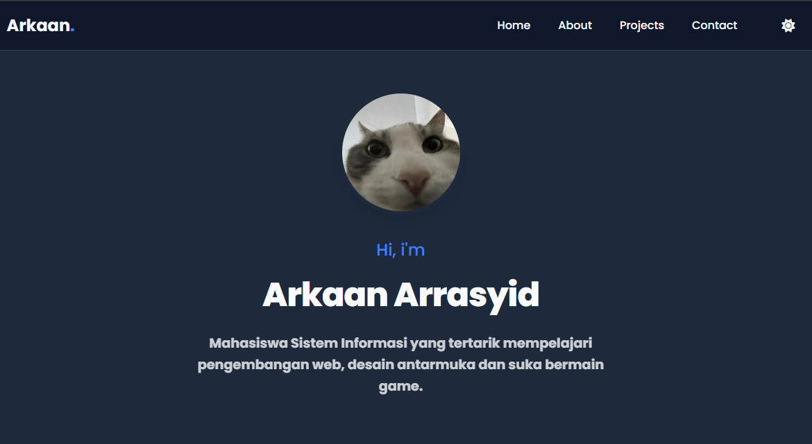

Hi, I'm
Arkaan Arrasyid
Mahasiswa Sistem Informasi yang tertarik mempelajari pengembangan web, desain antarmuka, dan suka bermain game.
Mahasiswa Sistem Informasi yang tertarik mempelajari pengembangan web, desain antarmuka, dan suka bermain game.
Saya adalah seorang mahasiswa Sistem Informasi yang antusias dan tertarik dengan dunia Web Development dan UI/UX Design. Saat ini saya sedang memperdalam HTML, CSS, JavaScript, PHP, dan MySQL melalui project pribadi sekaligus membangun portofolio untuk mempersiapkan diri menuju dunia profesional. Saya percaya bahwa cara terbaik untuk belajar adalah dengan membangun project nyata dan terus mengembangkan skill melalui pengalaman langsung.

Web Development
Website portofolio pribadi yang dibangun menggunakan HTML, CSS, dan JavaScript untuk menampilkan project, kemampuan, serta perjalanan belajar saya.

UI/UX Design
Prototype antarmuka aplikasi mobile bertema layanan delivery yang dirancang menggunakan Figma.

UI/UX Design
Prototype antarmuka aplikasi mobile untuk layanan manajemen kost yang mengintegrasikan pemesanan kamar, pembayaran sewa, serta pengelolaan data penghuni dalam satu aplikasi.